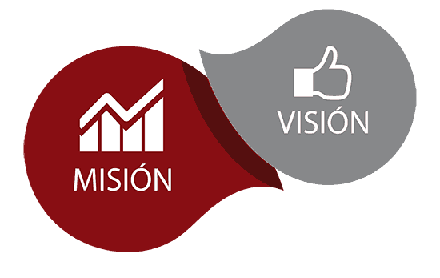

Pcont Planificación Tributaria y Contable ofrece al cliente un servicio profesional basado en normas éticas y en la calidad
del servicio en el ámbito de la consultoría contable, tributaria, empresarial, laboral y otros temas referente a los requerimientos
de los clientes.
El desarrollo de nuestro servicio consiste en efectuar un análisis de las operaciones efectuadas por la compañía en el tiempo pactado
con la misma, enmarcando nuestro trabajo dentro de la legislación ecuatoriana, determinando la existencia de posibles contingentes
tributarios que podrían ser determinados a futuro por el SRI y establecer los correctivos y soluciones correspondientes con la debida
antelación, sea documental o por procesos internos.
El éxito de los servicios de consultoría, se basa en la oportunidad y solidez con que se otorgue a los clientes. El trato profesional
y el carisma que pueda tener el consultor tienen que estar respaldados necesariamente por elementos de peso como el nivel de conocimientos,
experiencia, eficacia y en especial calidad.

Misión y Visión
Misión: Ser una organización de consultoría y capacitación ágil, competitiva e innovadora enfocada a superar las expectativas y brindando
soluciones de mejora a micros, pequeñas y medianas empresas, que las impulse a ser más productivas, rentables y competitivas,
comprometiéndose con el desarrollo integral del capital humano, donde el servicio y la atención brindada constituyan la clave del éxito.
Visión: Ser una empresa con continua rentabilidad y reconocimiento de nuestros clientes a nivel nacional, por su personal competitivo y
por sus servicios de consultoría y gestión de altísima seriedad, honestidad y calidad.